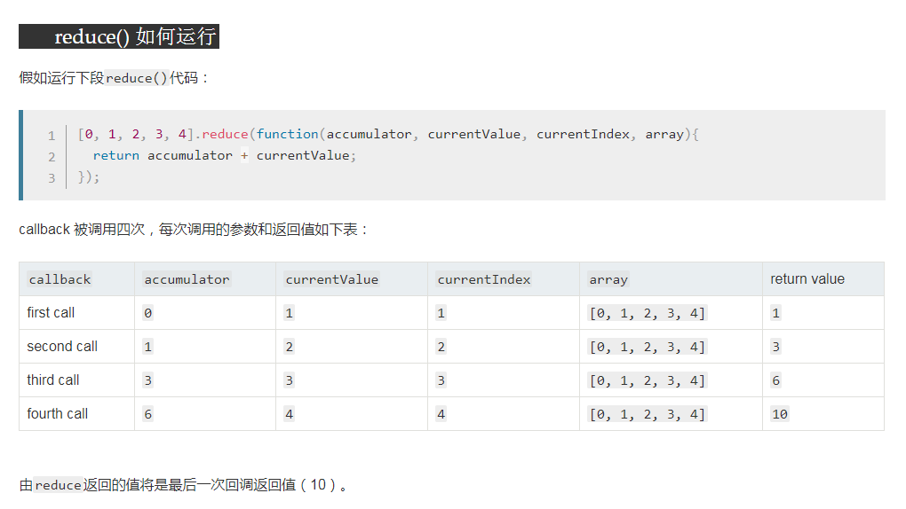
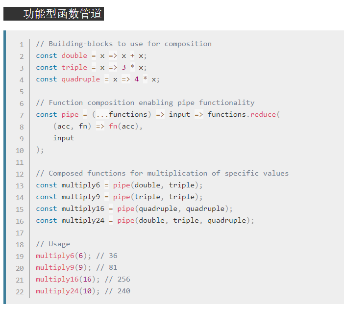

最近正在学习阮一峰老师的es6(第三版)教材，在学到第七章《函数的扩展》中的箭头函数嵌套时，文中提到了一个关于“管道机制”的示例，文中源代码如下：
//es6(第三版)教材中的管道机制源代码:
const pipeline = (...funcs) =>
val => funcs.reduce((a, b) => b(a), val);
const plus1 = a => a + 1;
const mult2 = a => a * 2;
const addThenMult = pipeline(plus1, mult2);
addThenMult(5);
下面为我对这段代码的理解分析：
一、这段代码中用到了2个主要知识点：
1、es6中的新特性：rest参数（即上面代码中pipeline函数的形参…funcs，它表示pipeline函数的形参是一个包含多个函数的函数数组，funcs则为数组名），形式为：…变量名。用于获取函数的多个参数，类似于之前的arguments对象。rest参数搭配的变量是一个数组，该变量可以将多个参数放入其中。因为rest参数中的变量代表一个数组，所以数组特有的方法都可以用于这个变量。
2、数组对象的reduce（）方法（这也是实现管道机制的核心技术）：
reduce() 方法接收一个函数作为回调函数，reduce()方法为数组中的每一个元素（从左到右）依次执行这个回调函数，最终计算为一个值。
语法：arrayObject.reduce(function(prev, currentItem, currentIndex, arrayObject), initialValue)
参数：
●prev：必需。表示数组中前一个元素调用reduce() 方法回调函数后的返回值，或者初始值 initialValue；
●currentItem：必需。表示当前正在调用reduce() 方法回调函数的数组元素；
●currentIndex：可选。表示当前正在调用reduce() 方法回调函数的数组元素的索引。若提供了 initialValue值，则索引为0，否则索引为1；
●arrayObject：可选。当前正在调用reduce() 方法回调函数元素所属的数组对象（即调用reduce()的数组）；
●initialValue：可选。传递给此reduce() 方法回调函数的初始值。作为第一次调用回调函数时的第一个参数的值。 如果没有提供初始值，则将使用数组中的第一个元素。 在没有初始值的空数组上调用 reduce 将报错。
关于initialValue参数作用的进一步说明：回调函数第一次执行时，prev 和currentItem的取值有两种情况：如果调用reduce()时提供了initialValue，则prev取值为initialValue，currentItem取数组中的第一个元素；如果没有提供 initialValue，那么prev取数组中的第一个元素，currentItem取数组中的第二个元素。如果没有提供initialValue，reduce 会从索引1的数组元素开始执行回调函数，跳过第0个索引。如果提供initialValue，则从索引0开始。如果数组为空且没有提供initialValue，会抛出TypeError 。如果数组仅有一个元素，并且没有提供initialValue， 或者有提供initialValue但是数组为空，那么此唯一值将被返回并且回调函数不会被执行。
关于reduce（）方法的运用实例，可以参照MDN这篇文章：https://developer.mozilla.org/zh-CN/docs/Web/JavaScript/Reference/Global_Objects/Array/Reduce，会更有利于帮助理解这个方法的用途。以下为MDN部分截图：

二、管道机制（pipeline）：(MDN中也称“功能型函数管道”)即前一个函数的输出是后一个函数的输入。管道机制类似于jQuery中的链式编程，以return的形式持续操作。
三、这段代码实现的功能为：让一个数字先与1相加，得出的结果然后再与2相乘，最后返回计算后的结果。
四、经过对上面代码的一番思考，我根据自己的理解将上面代码的参数表示稍作了一点语义化的改动，让我更清晰的理解这段代码的运行机制：
const pipeline = (...funcs) =>
num => {
console.log( num)；
return funcs.reduce((prev, fn) => fn(prev), num);
}
const plus1 = num=> num + 1;
const mult2 = lastresult => lastresult * 2;
const addThenMult = pipeline(plus1, mult2);
console.log(addThenMult(5)) ; //12
下面为这段代码的具体注释详解：
const pipeline = (...funcs) =>
num => {
//打印这个形参 num看一下, num就是传递给reduce方法里回调函数的初始值
console.log( num)；
//funcs数组调用reduce（）方法，这时，初始值num就是reduce回调函数中的第一个形参prev，而此时reduce回调函数中的第二个形参fn则代表funcs数组里的第一个函数。根据这个回调函数的函数体：(prev, fn) => fn(prev)执行，首先将初始值num（即prev）传递给funcs数组里的第一个函数(即fn（）)作为实参并进行第一个函数的调用，第一个函数的运算结果（即lastresult）得出后紧接着把这个结果再传给funcs数组里第二个函数作为第二个函数的实参并进行调用，第二个函数的运算结果得出后紧接着再传给第三个函数作为第三个函数的实参并进行调用，以此类推。。。。。。直到funcs数组中的最后一个函数元素执行完毕后，pipeline函数返回的函数的返回值就是reduce（）方法的返回值，而reduce（）方法的返回值就是funcs数组中最后一个函数参数执行回调函数后返回的值。
return funcs.reduce((prev, fn) => fn(prev), num);
}
const plus1 = num => num + 1;
const mult2 = lastresult => lastresult * 2;
//实参plus1函数对应形参funcs数组中的第一项元素，也就是pipeline函数的第一个形参
//实参mult2函数对应形参funcs数组中的第二项元素，也就是pipeline函数的第二个形参
const addThenMult = pipeline(plus1, mult2);
//这里的实参“5”就是传递给pipeline（）函数return回的addThenMult函数中funcs数组调用reduce（）方法后的回调函数的初始值 num。 5会先作为plus1函数的实参传入并执行plus1函数，结果为5+1=6；然后再将这个结果6（即lastresult）传递给mult2函数作为mult2函数的实参并执行mult2函数，结果为6*2=12。
console.log(addThenMult(5))
//所以最后devtools中上面两处console.log()打印出的结果分别为：
>>5
>>12
五、最后，再附上一张MDN中对于管道机制的一个示例，也可以帮助更好的理解管道机制的实现原理：
